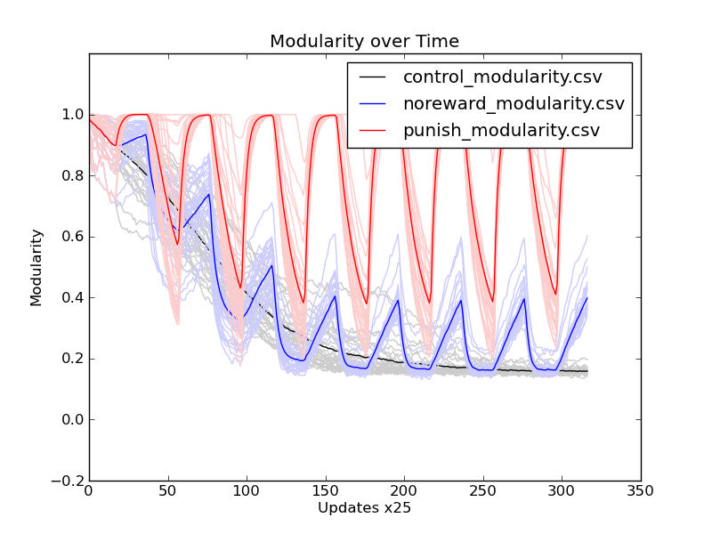
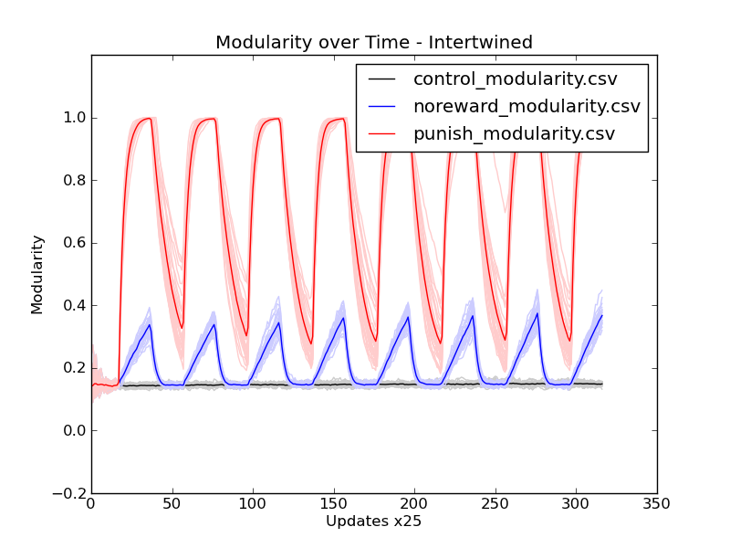
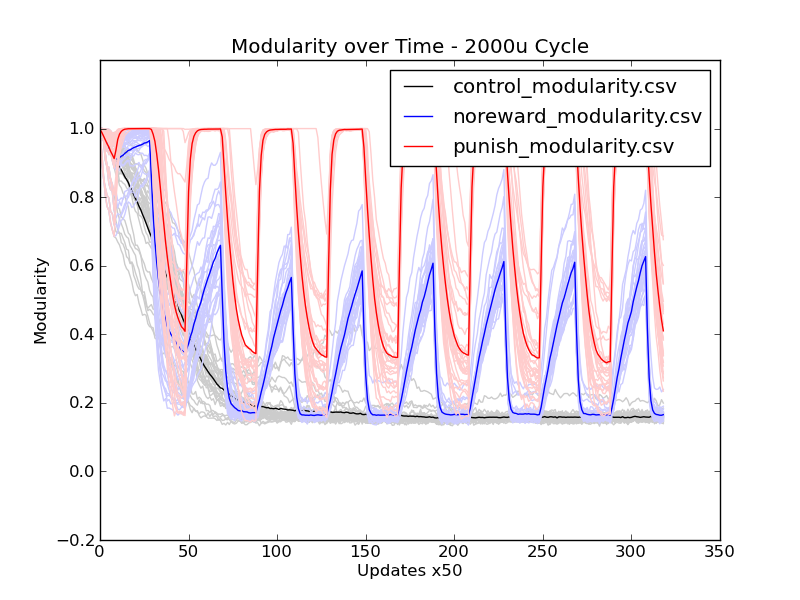

STATUS:
LOG:
rosiec@malp:/Volumes/rosiec/research/Devolab Research/evolution_of_modularity/raw_data/056$ python ../../../scripts/generate_graphs_from_raw_data/plot_from_csv.py -m -t "Modularity over Time" -x "Updates x25" -y "Modularity" comparitive_modularity.png control_modularity.csv noreward_modularity.csv punish_modularity.csv

STATUS EMAIL TO CHARLES:
RESULTS!
I started with an XOR/EQU seed organism, with the tasks separated, and measured average population modularity over time in the three treatments (control, no reward, and punishment). Both no reward and punishment approach the basement modularity level faster than the control. Punishment doing this was initially a surprise, but it makes sense if you think of it in terms of what evolutionary pressures are at play at what times. I will be presenting this tomorrow.
Also, I'll be asking for advice about how to measure evolvability and robustness by looking at fitness landscapes, and whether that even makes sense. Specifically, I'm not sure it makes sense to think about evolvability as straight fitness landscapes at all, especially on a site_by_site basis, because any mutation at a site is uniformly one step away. I'll give it some thought and present a preliminary framework about measuring evolvability and robustness and see where that goes.Anyway, a picture is worth a thousand words: <attached above graph>
PLAN:
STATUS

STATUS:
LOG:
LOG:
[caninoko@gateway]:[6]:[/mnt/scratch/caninoko/058]:$ mkdir populations; for i in *_*; do mkdir $i/data/populations/; mv $i/data/detail* $i/data/populations/; mv $i/data/populations/ ./populations/$i; tar -zcvf $i.tar.gz $i; done [caninoko@gateway]:[6]:[/mnt/scratch/caninoko/059]:$ mkdir populations; for i in *_*; do mkdir $i/data/populations/; mv $i/data/detail* $i/data/populations/; mv $i/data/populations/ ./populations/$i; tar -zcvf $i.tar.gz $i; done rosiec@atlantis:~/research/Devolab Research/evolution_of_modularity/raw_data/058$ scp caninoko@gateway.hpcc.msu.edu:/mnt/scratch/caninoko/058/*.tar.gz ./; for i in *.tar.gz; do tar -zxvf $i; done; rm *.tar.gz rosiec@atlantis:~/research/Devolab Research/evolution_of_modularity/raw_data/059$ scp caninoko@gateway.hpcc.msu.edu:/mnt/scratch/caninoko/059/*.tar.gz ./; for i in *.tar.gz; do tar -zxvf $i; done; rm *.tar.gz
rosiec@atlantis:~/research/Devolab Research/evolution_of_modularity/raw_data/058$ rm control_modularity.csv; for i in control_*; do cd $i/data/analyze/; python ../../../../../../scripts/common\ modules\ and\ helper\ scripts/extract_single_column_to_csv.py --dimensionality 1 8 modularity-???.dat* modularity-????.dat* modularity-?????.dat* >> ../../../control_modularity.csv; cd ../../../; done rosiec@atlantis:~/research/Devolab Research/evolution_of_modularity/raw_data/058$ rm noreward_modularity.csv; for i in noreward_*; do cd $i/data/analyze/; python ../../../../../../scripts/common\ modules\ and\ helper\ scripts/extract_single_column_to_csv.py --dimensionality 1 8 modularity-???.dat* modularity-????.dat* modularity-?????.dat* >> ../../../noreward_modularity.csv; cd ../../../; done rosiec@atlantis:~/research/Devolab Research/evolution_of_modularity/raw_data/058$ rm punish_modularity.csv; for i in punish_*; do cd $i/data/analyze/; python ../../../../../../scripts/common\ modules\ and\ helper\ scripts/extract_single_column_to_csv.py --dimensionality 1 8 modularity-???.dat* modularity-????.dat* modularity-?????.dat* >> ../../../punish_modularity.csv; cd ../../../; done rosiec@malp:/Volumes/rosiec/research/Devolab Research/evolution_of_modularity/raw_data/058$ python ../../../scripts/generate_graphs_from_raw_data/plot_from_csv.py -m -t "Modularity over Time - 2000u Cycle" -x "Updates x50" -y "Modularity" comparitive_modularity.png control_modularity.csv noreward_modularity.csv punish_modularity.csv

rosiec@atlantis:~/research/Devolab Research/evolution_of_modularity/raw_data/059$ rm control_modularity_056.csv; for i in *056_control_*; do cd $i/data/; python ../../../../../scripts/common\ modules\ and\ helper\ scripts/extract_single_column_to_csv.py --dimensionality 1 8 modularity*-??.dat* modularity*-???.dat* modularity*-????.dat* >> ../../control_modularity_056.csv; cd ../../; done rosiec@atlantis:~/research/Devolab Research/evolution_of_modularity/raw_data/059$ rm noreward_modularity_056.csv; for i in *056_noreward_*; do cd $i/data/; python ../../../../../scripts/common\ modules\ and\ helper\ scripts/extract_single_column_to_csv.py --dimensionality 1 8 modularity*-??.dat* modularity*-???.dat* modularity*-????.dat* >> ../../noreward_modularity_056.csv; cd ../../; done rosiec@atlantis:~/research/Devolab Research/evolution_of_modularity/raw_data/059$ rm punish_modularity_056.csv; for i in *056_punish_*; do cd $i/data/; python ../../../../../scripts/common\ modules\ and\ helper\ scripts/extract_single_column_to_csv.py --dimensionality 1 8 modularity*-??.dat* modularity*-???.dat* modularity*-????.dat* >> ../../punish_modularity_056.csv; cd ../../; done rosiec@malp:/Volumes/rosiec/research/Devolab Research/evolution_of_modularity/raw_data/059$ python ../../../scripts/generate_graphs_from_raw_data/plot_from_csv.py -m -t "Modularity over Time – 2 Tasks Only" -x "Updates x25" -y "Modularity" comparitive_modularity.png control_modularity.csv noreward_modularity.csv punish_modularity.csv
STATUS: